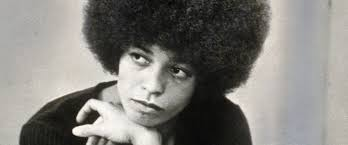

Loc's 4 Life
Dee Dee Drake

SIMPLE TIPS
DO NOT USE CHEMICAL OR SYNTHETIC PRODUCTS TO HOLD YOUR HAIR TOGETHER “TO MAKE IT LOCK” BEESWAX, LEMON JUICE,ETC…
DO NOT CONSTANTLY TWIST YOUR HAIR TO “MAKE IT LOCK”.
ONCE THE LOCKS ARE STARTED “LET THEM BE”.
AT LEAST TWICE A WEEK, MOISTURIZE YOUR SCALP AND HAIR.
DO NOT USE ANY PRODUCT ON YOUR HAIR EVERYDAY THAT INCLUDES OILS, GREASE OR SPRAY.
TIE YOUR HEAD UP EVERY NIGHT.
ENJOY YOUR LOCKS, DON’T FOCUS ON THEM TOO MUCH!
DO NOT TRY TO CONTROL YOUR LOCKS ALL THE TIME LET LET THEM DEVELOP FREELY.
GET A GOOD FOUNDATION’ START YOUR LOCKS BY GOING TO A PROFESSIONAL LOCKTICIAN.
CLEAN HAIR IS HEALTHY HAIR.
ENJOY THE MANY STAGES OF DEVELOPMENT OF YOUR LOCKS.
About the stylist:Dee Drake
There are some people who like to sing, dance, draw play sports, or just chill. As for Dee Dee, she loves doing hair because this is what she does best, she explains.”I can’t remember exactly when this interest struck me; it probably began when I was a little girl playing with my dolls.
Working with hair consumes most of my time and I love it!”
The incipience of Dee Dee’s career was at Songa Hair Braiding in 2976 up in Harlem, U.S.A.Within a few short years, she moved to Salih Talib, another salon which was located in the local Young Men’s Christian Association edifice (YMCA) also in the “Big Apple”. While working there, she studied and received her cosmetology license from Wilford Academy, Bronx, New York. During this time she faced a tremendous challenge: enduring a five your bout with a child who had cancer. She did not give up, nor did she allow her child to do so. She moved on and became employed t face and Nail Fix Salon. She began to dream of owning her own hair salon one day.
Dee Dee soon realized that dreams can very well become reality when she opened her own salon. A Perfect Ten. She was on her way and her motivation to succeed in the hair business was just that, “A Perfect Ten”. Always a positive thinker,she did a little soul searching and some research. As a result, she decided to spread her wings and fly. “Charm City, Baltimore, Maryland was the place for her. In 2001, the ribbon was cut and Loc’s 4 Life was opened. “This business is always changing. In order to make it, you have to stay on top of new trends and changes in the hair care industry.” Dee Dee advises. Following her own own advice, she continuously enrolls in classes and has studied under notables like Taliah Waajid in Atlanta, Georgia and Masani of Haircraft right here in Baltimore. Her success is constant, allowing her to remain in the business of styling and caring for hair over 25 years. “The reaction I get from a client when their hair has been redone is awesome,” she admonishes. “When my clients are happy, I am happy,” she further exclaims.
At Loc’s 4 Life, all clients are privileged to various hair styling and the proper caring for the hair. In addition, they are educated and well informed about numerous products and what should be and should not be done when transforming their hair from chemically processed to a natural man, an extremely crucial process. All clients are given expert advice in order to make an informed decision that is right for them. Moreover, once you become a client, you will receive professional and personal attention. All first time timers receive free consultation. “We schedule by appointment only because we are aware of the busy lives people live, and many do not have time to wait in line all day at a salon,” Dee Dee emphasizes.
The staff and personnel at Loc’s 4 Life takes pride in their work and are confident that they will meet all your hair care needs. Their motto is,”If your hair is not becoming to you, you should be coming to me.” Give us a try, you will love it!